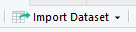
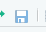

Assuming that sufficient time has passed since your last statistics class for you to forget a thing or two, we will spend some time reviewing the basic statistical methods typically taught in introductory classes. This will both help you recall the how and why of statistical analysis, as well as giving you a chance to begin learning to use R, the statistical package we will use for the rest of the semester. The procedures we will today are:
| Procedure | Purpose | Data type |
|---|---|---|
| One-sample t-test | Compare a single mean to a specified value | Numerical (continuous) |
| Two-sample
t-test, paired t-test |
Compare means between two independent sets of observations Compare mean of differences between two logically paired set of observations to 0 |
Numerical (continuous) response, categorical grouping variable Numerical (continuous) differences |
The hyperlinks for each procedure link to background material we use in Biol 215 - please read through them to refresh your memory.
Next week we will be reviewing one-way ANOVA and simple linear regression, and you can find Biol 215 material at the links for those topics.
If you need further review, have a look at this information on: variable types, accuracy and precision of data, graphical summary of data, numerical summary of data, probability, normal distributions, estimates from samples and confidence intervals, and transformations.
The following are additional Biol 215 materials that you won't need to review for this class, but are included for the sake of completeness, if you wish to review them: nonparametric statistics, correlation analysis, Chi-square goodness of fit, and Chi-square contingency table analysis.
A little background on R
The statistical package we are using for this class is free of charge. The reason why this is the case is interesting, and before we start on the exercise, you should know a little about the software.
R is an "open source" implementation of the S+ statistical computing language, and is available for several different computing platforms (Windows, Mac OS, Linux and other UNIX-like operating systems). Open source software is developed in a collaborative way by teams of programmers, often on a volunteer basis. There are many reasons that programmers choose to participate in open source projects, but from a user's perspective there are several practical advantages to using open source software. The first is that the "source code" written by the programmers can be reviewed by other programmers, or even by users if they choose, which provides a form of peer review. Peer review is an important quality control mechanism in scientific work, and it has the same effect in software development. The second benefit to users is that this openness promotes a cooperative attitude, which can lead to a tremendous amount of contributed code; the benefit of this becomes obvious both through R's impressive feature set, as well the huge number of contributed extensions that allow R to perform some very specialized types of data analysis, from estimating home ranges from animal point locations, to analysis of genomics experiments. You can see the list of available add-on packages here, grouped by the type of problem the add-on is useful for addressing (as of this writing, there are over 10,000 contributed packages available). Finally, because the code is contributed for free, open source software is usually distributed free of charge, which is true of R.
R is a flexible, comprehensive platform for statistical analysis and graphics. It is extremely powerful, but by itself it is not user friendly. The graphical user interface (GUI) that is distributed with R for Windows helps with only for very rudimentary things, such as management of extension packages, but the statistical analysis functions are accessed through a command-line interface (CLI). Graphical interfaces that have been written for R provide access to many of the most common statistical procedures, and we will make extensive use of one of them, called the R Commander. However, we will do some of our work at the command line, as some of the packages you might need to use at a later date do not have a graphical interface.
What can R do?
Simply put, there is probably nothing you would want to do with data that R cannot do. It has a very comprehensive set of statistical functions for data analysis built in, and anything it doesn't do by default can be added with user-generated functions and extensions. A short, incomplete, list includes:
- Basic data summary
- Basic statistical hypothesis testing (t-tests, nonparametrics)
- Linear models (ANOVA, regression, logistic regression, loglinear analysis, etc.)
- Multivariate analysis (MANOVA, PCA, DFA)
- Graphics
User-contributed packages are available that vastly expand the basic capabilities. Another short, incomplete list that may be of interest to biologists includes:
- Monte Carlo simulations, randomization methods
- Kernel smoothing techniques
- Phylogenetic analysis
- Ordination methods (CCA, RDA, DCA, etc.)
- Genomic analyses
- Home range estimation and habitat use analysis
- Mark-recapture methods for estimating population size, survival probability
One potential benefit of the platform, then, is that virtually any analysis one might want to do can be accomplished under one umbrella. Once you've taken the trouble to learn how to use R, you can use it for just about anything you might want to do with data.
A kinder, gentler interface
If you download R and install and launch it, you will see a program that looks like this (on Windows). The "R Console" is where commands are issued, and the the "GUI" that is distributed is very rudimentary - there are no menus for running statistical analyses or making graphs, like you get with MINITAB, and all of the menu selections and buttons are for opening and saving R's "workspaces", printing output, or managing add-on packages.
{kind=link}
Graphical interfaces have been developed that use R for all of the work, but allow the user to use menus and windows to do their work, but all of them have serious limitations. For example, the most polished interface available (in my opinion) is called Rkward, and its interface looks like this. There are menus for analysis and plotting, and a spreadsheet-like data viewer. Rkward development has been very slow, however, and many of the analyses we will do in this class are not yet supported. Another popular option that I've used in this class before is called the "R Commander", which looks like this. Aside from the obvious problem that it's as ugly as the south end of a northbound dog, it too only supports some of R's capabilities, and doesn't handle such simple tasks as producing more than a single graph at a time with ease.
{kind=link}
{kind=link}
Instead of using a full-blown graphical interface, we will be using an "integrated development environment" (or IDE) designed specifically for R, called R Studio. R Studio is not a graphical interface to R's statistical analysis, but it is a graphical interface to such useful things as accessing help files, browsing for and importing data files, managing graphs, and editing R commands. It is the tool I use in my own work. By using R Studio we will need to learn to do nearly everything at the command line, but R Studio will make this learning curve easier.
Starting R Studio and importing your first data set
Find R Studio in the Start menu, and launch it. You will see a window that looks like this:
If you move your mouse over the picture above you'll see popups that indicate the location of the:
- Console - where R commands are entered, and output is displayed
- Menu bar - where the File menu is found (and other menus that we will learn about as needed)
- The Project menu - where projects can be created, opened, or closed
- Environment tab - where all the objects in our workspace will be displayed. The environment is active working space, in computer memory.
- History tab - a list of the commands used, which can be selected and re-used
- Files tab - where the files in the current working directory are displayed. These are files stored on disk, rather than being loaded in computer memory. We would need to load a data file from disk into memory for it to appear in the Environment, and to be usable by R.
- Plots tab - where any graphs we make will be viewed (and from where they can be exported)
- Packages tab - where add-on packages that are currently installed can be loaded for use
- Help tab - where help files can be searched and viewed
The first thing we will do is to make a new project for our review exercise.
Start a new project for this exercise
One of the best reasons to use R Studio is that it makes management of your work in R much easier. An excellent example of that is in its management of your R session. All of the data you import, and any results that you assign to "objects" within R will be saved in an R "workspace", which is a file that is saved to disk, usually called .RData (note the period before the R). R will also save a history file, called .Rhistory. However, all the other things that you create, such as your statistical output and graphs, do not get saved by R. To fix this, R Studio uses "projects", which are folders that contain everything you are working on in your R session, as well as a project file that keeps track of the state of your R Studio session the last time you saved it. When you open a project file, you will see your session in exactly the state you last saved it in, so that you can pick up where you left off.
To make a new project, do the following:
- Select "File" → "New Project..."
- In the "Create Project" window, select "New Directory".
- In the "Project Type" window select "New Project".
- In the "Create New Project" window we will name the new folder (a.k.a. directory) that will contain our project:
- Enter "review1" as the directory name.
- We also need to set the folder that contains the folder we are about to create, so click on "Browse" and navigate to your H: drive. Make a folder on H: for this class (with the "New folder" button), and then select that as the folder that will hold your new project folder.
- Click "Create Project" to create the new project.
Once you're done you'll see that the Environment tab is blank, except for a gray "Environment is empty" label, and the "Files" tab shows a review1.Rproj file (the new project file that R Studio just created), and nothing else. The thin status bar just above the "Name" label shows that you are looking at the contents of the new folder you just created on your H: drive. This is your "working directory", which R will use for output files, and where it will look for any input files unless you tell it otherwise.
Import data into an R data set
Download this file, and note where it goes (it probably went to the Downloads folder if your browser didn't ask you where to pit the file). All of the data sets you will use for this week and next week's review exercises in this file.
We need to import the first worksheet into R, so we need to go find it:
- In the environment tab, click on "Import Dataset", , and then "From Excel", which will bring up the "Import Excel Data" window.
- Click on "Browse" to the right of the "File/Url:" box, navigate to where you put "review_data.xls" (probably Downloads), click on it and then click "Open".
- In the "Import Excel Data" window, set the "Name" to "onesample", and the "Sheet" to onesample. The "Name" is the name of the new R data set you will create, and the "Sheet" is the name of the worksheet in the review_data.xls file. You'll see a preview of the data, which should have a single column of data on body temperature.
- Click "Import"
The data will be imported, and put into an object called "onesample", which you'll see in the Environment tab. The data is opened in a window above the Console window, so that you can view it.
Note that at this point you have a project file saved into your folder, but this new R data set is not saved yet - it's in memory, but not yet saved to disk. When you quit R Commander it will ask you if you want to save the workspace into a file called .RData, but this hasn't been done yet, and if R Commander crashes you would lose your data set - the workspace is saved to a separate file from the project file. To save the workspace now, click the save icon, , in the "Environment" tab and save the workspace as a file called ".RData" (watch the period and the capitalization). This is the default name for R workspaces, and R Studio will find it and load it automatically when you open the project later. You should now see a file called .RData in your "Files" tab.
Objects and functions
We are using R to analyze our data, but it is also an object-oriented programming language. Object-oriented programming refers to an approach to writing computer programs that attempts to mimic the way that we interact with physical objects. Real, physical objects have properties that define them (volume, shape, mass). When we want to accomplish a task, the way we accomplish the same task is different depending on the type of object we'll use - for example, if we want to go to Los Angeles we will drive if we have a car, and will fly if we have a helicopter. Object orientation means that when we make a data set in R it has properties and methods, which refers to the way that we accomplish a task for that object type.
To interact with an object, like our onesample data set, we can use functions. Most functions take arguments that tell them what to operate on and set options for how to operate, and all functions return results. A function in R will have a name followed by parentheses with no spaces between the name and the left (open) parenthesis. Functions will often have default settings for their arguments, and if the default settings are what you want you can accept them by leaving the arguments blank. For example, the ls() function is used to list the contents of a workspace, and if you just want to list the contents of the current workspace (the default) you just need to type:
ls()
at the > prompt in the console, and you'll see the output:
[1] "onesample"
The [1] is an index number that tells us that onesample is the first (and in this case, only) object in the workspace (listed alphabetically).
We will use functions on our onesample object as well - to get a statistical summary of the body temperature in onesample, use the command:
summary(onesample)
which will display a summary in the Console window. One of the nice features of R Studio that you'll notice as you type this command is code completion. As you type R Studio will match what you've written already to lists of possible command and will give you a pop-up list of commands to choose from. If you select the command you want from the list (with up and down arrow keys) and then hit the TAB key the selection will be entered for you. This works with names of objects, and names of variables within objects as well. I recommend you take advantage of this feature, because one of the biggest frustrations in learning to use R is that it is very fussy about spelling, capitalization, and syntax of commands, and using code completion will help you avoid typos.
One-sample t-test
To review one-sample t-tests, you will test whether body temperature is different from 98.6 degrees. Imagine these data represent a set of body temperature measurements from a group of CSUSM students. Because you have a single sample of data, with a single mean body temperature, you will compare the mean of the data to a hypothetical value you specify using a one-sample t-test.
1. Check the assumptions of the test. If you recall, a one-sample t-test assumes that the data are normally distributed. We can check this using the Shapiro-Wilk normality test - it assumes the data are normally distributed as the null hypothesis, so a p-value over 0.05 indicates normality:
shapiro.test(onesample$Body.temperature)
The command is shapiro.test(), and it takes one argument, which is the variable that we want to test for normality. Note that we had to tell R both which data set to use, and which variable to use - if you tried shapiro.test(onesample) it would not work, even though there is only one variable, and if you tried shapiro.test(Body.temperature) it would not work because R wouldn't know which data set contained this variable, even though there is only one in the workspace. R is very literal.
You'll see from the output of shapiro.test() that p is 0.1131, so we pass the normality assumption.
This style of referring to a column in a data set - with the name of the data set followed by the name of the variable, separated by a dollar sign - is common, but not the only way available. We can refer to parts of a data set with a [row, column] index instead, like so:
shapiro.test(onesample[ , 1])
Leaving the row number blank tells R to use all of the rows, but the 1 in the column index tells R to use the first column in onesample for the test. Finally, we can use the with() command to identify the data set, and then nest the shapiro.test() command within it, like so:
with(onesample, shapiro.test(Body.temperature))
I personally prefer the first or third method, because it makes the commands easier to understand.
2. Before conducting a one-sample t-test, look at your data! A good choice for small to medium sized data sets (100 observations or less) is a "strip chart", which plots the individual data points (much like MINITAB's individual value plots). To make one, use the command:
stripchart(onesample$Body.temperature, xlab = "Temperature")
You should have a plot that shows each individual data value along a horizontal line. The xlab argument sets the x-axis label.
Another good type of graph to use to see the distribution of the data is a box plot, which you can get with:
boxplot(onesample$Body.temperature, ylab = "Temperature")
Box plots show the smallest and largest non-extreme data values as whiskers, and three quartiles (the 1st, 2nd, and 3rd) as a box with a line in the middle. Quartiles are the 25th, 50th, 75th, and 100th percentiles, meaning that they are the values below which 25%, 50%, 75%, and 100% of the data values fall. The 2nd quartile is also called the median, and the 4th quartile is the maximum data value. The difference between the 3rd and 1st quartile is called the interquartile range, and if there are any data values that are more than 1.5 times the interquartile range away from the bottom or top of the box they are considered extreme values. Extreme values are not necessarily errors, but they can cause problems for data analysis and boxplots flag them by plotting them with circles below the lower whisker or above the upper one. You can see there is one extreme value below the lower whisker, but none above, so the circle is the minimum, and the upper whisker is the maximum for the data set.
3. Now you're ready to conduct the one-sample t-test. The command is:
t.test(onesample$Body.temperature, mu = 98.6)
Output is reported in the console, and should look like this.
{kind=link}
This command requires a data set to work on, and a numeric value to compare the sample mean of the data against. Note that the data set is given as the first argument without any kind of identifier, but the second argument is identified as the value of the population mean (mu) that we want to use. R commands will have a default order for arguments, and if you put the arguments in the correct order you do not have to identify them. The mu option is actually the fourth argument in this command, but since there are some optional arguments that we aren't specifying we need to use the mu = label to tell R what 98.6 refers to. To avoid giving the name of the option we could use the command:
t.test(onesample$Body.temperature, , , 98.6)
and since 98.6 is the fourth argument, with the commas holding the
place of the second and third, the t.test() command works without
needing to name 98.6 as the mu argument.
One of the choices we need to make when we do hypothesis testing is whether we want to do one-tailed or two-tailed testing. If we do one-tailed testing we are only interested in detecting a difference in a particular direction - if we were measuring these temperatures to find out if people in the class are running a fever we would only be interested in whether the sample mean is higher than 98.6, and we may want to do a one-tailed test. If instead we're checking whether 98.6 is an accurate normal body temperature, then differences that are either above or below the mean are of interest, and we would use a two-tailed test. We specify whether we are doing a one-tailed or two-tailed test by specifying the alternative hypothesis - if we are only interested in testing for increases in body temperature we would use the command:
t.test(onesample$Body.temperature, mu = 98.6, alternative = "greater")
The default is to do two-tailed testing, so we don't need to specify an alternative if we are interested in differences that are either greater than or less than mu.
If this distinction still does not make sense to you, read the review material on one-sample t-tests, above.
Two-sample t-test
Charles Darwin was not only an important theoretician, he conducted many experiments to test his ideas on evolution by natural selection. On the page "twosample", you have some of Darwin's data on an experiment comparing the heights of a species of plant, the "mignonette", that can reproduce either by self-pollinating, or by using pollen from other individuals. Darwin experimentally selfed some plants and crossed others, and collected the resulting seed. He then planted seeds from each pollination treatment group, and measured the heights of the offspring.
You now have data from two different groups, and would like to know if their means are different enough to conclude they come from statistical populations with different means - remember, the sample means are almost certainly not identical, but that's not what we are testing (why would we test if the sample means are different when they obviously are not?). We are testing if the population means are different, given the amount of difference we find between between these two sample means.
1. Find the Excel sheet with the data and import the sheet called "twosample" into an R data set called "twosample". You'll see that we have two variables: Height (the height of the plants in cm) and Pollination (a grouping variable indicating if the plant was crossed or selfed). This arrangement of data, with groups indicated by a column called a "factor", is referred to as "stacked" data, and it's the arrangement we will use throughout the class.
2. To make a strip chart of the height data grouped by pollination use the command:
stripchart(Height ~ Pollination, data = twosample)
Note that this command allows us to use a formula statement to say that we want to plot Height as a function of Pollination, with the tilde character (found to the left of the 1 on the keyboard) taking the place of an equal sign. This style of statement is very common in R. The second argument identifies the data set, so we don't need to use twosample$Height or twosample$Pollination to identify the data set to use.
To make a box plot for these data use the command:
boxplot(Height ~ Pollination, data = twosample, ylab = "Height (cm)")
This command also uses the formula notation to group the heights by pollination group, and then adds an argument to set the label on the y-axis to "Height (cm)".
3. We need to test the data for normality, but we need to do this by group - if the two pollination types are have a different mean then the data may be bimodal when the groups are combined, even though they are normal when they are split.
R is able to apply functions to subsets of data using the tapply() function. The tapply() function takes a column of data as its first argument, a grouping variable as its second argument, and a function to be applied to each group as the third. We can do Shapiro-Wilk tests on each pollination group with:
with(twosample, tapply(Height, Pollination, shapiro.test))
You will see that R reports two different tests, one for each pollination group. We pass for both of them.
4. Test the assumption of equal variances. Equal variances between groups is an assumption of the test, meaning that we can only trust our test of differences between the means to be accurate if we have equal variances (equal variances is not the biologically interesting question, therefore, we're just testing whether it's okay to use the t-test).
To run Bartlett's test of homogeneity of variances (HOV) use the function:
with(twosample, bartlett.test(Height, Pollination))
If you fail to reject that hypothesis (that is, if p > 0.05), consider the variances the same.
5. Now that we know that we meet the normality and HOV assumptions we can test for differences in mean height between groups. The same function is used, but with different arguments:
t.test(Height ~ Pollination, var.equal = TRUE, data=twosample)
This version of the t.test() function says that Height is a function of Pollination group, that the test should assume equal variances, and that the data set containing the variables is twosample.
6. Answer the questions on your assignment sheet.
Note that in addition to the p-value, R reports a confidence interval the difference between the means. If it has a negative lower bound and a positive upper bound, the difference could be zero, and you would fail to reject the null. If it has two negative or two positive bounds, zero is not included in the interval, and you could reject the null.
Paired t-test
A classic paired data set is one in which the same experimental subjects are observed in two different experimental conditions. You have data on plant CO2 uptake in two different ambient CO2 concentrations (250 ppm and 500 ppm). The goal is to compare the uptake between these two concentrations, but since each of 12 plants are tested at each concentration, we would expect the uptake values not to be independent, because uptake at 250 ppm and at 500 ppm are likely to be more similar for the same plant than for other plants in the data set. This causes two different problems: a) if we treat the observations as independent, we will use a greater degrees of freedom than we actually have, which will make our p-values inaccurate, and b) a small but consistent increase in uptake from 250 ppm to 500 ppm could be obscured by a large amount of variation among plants. We will use a paired t-test to correct for this lack of independence, and solve both of these problems.
1. Import the sheet called "paired" into an R data set also called "paired".
2. We should look at the data, but we have a small problem - our charts want the data to be in a stacked arrangement, but these data are arranged side by side to facilitate the paired t-test we will do. Stacking the data would mean putting both sets of uptake values in a single column, with a second column that indicates the CO2 treatment. R has a function that does this for us:
stack(paired, c(2,3))
This command takes the data set to be stacked as the first argument, and a vector of column numbers that should be stacked. Vectors are a single row or a single column of values, and R creates them using the c() command. The first column of the data set is just a plant ID label, which we don't need to plot, so we are just stacking the second and third columns. You'll see the result in the console.
We have a small problem that we are only seeing the result in the console - a new data set is not created, because we didn't assign the result to a new object. We can fix this by recalling the command you just issued using the up arrow key, and then modifying the command like so:
stack(paired, c(2,3)) -> co2.stacked
The arrow formed with a dash followed by a greater than symbol is an assignment operator which causes R to take the output of the function on the left side and assign it to the new object on the right side. You can also assign from right to left by making the arrow point in the other direction, like so:
co2.stacked <- stack(paired, c(2,3))
When you assign output to an object it is not reported to the console, but you should now see an object called co2.stacked in your environment. To see it in the console you can write its name at the command prompt:
co2.stacked
and its contents will be displayed. If you click once on co2.stacked in the Environment tab it will open in a data viewer tab so you can scroll through the data.
3. The column names are not very useful - stack() assigned the name "value" for the uptake data, and "ind" (short for "index") for the CO2 treatment. We can use the command colnames() to extract the column names that are currently assigned:
colnames(co2.stacked)
which will display the column names in the console. We can also use colnames() to change the names to other values with the command:
colnames(co2.stacked) <- c("Uptake", "Treatment")
This command assigns a vector with "Uptake" and "Treatment" as the column names for co2.stacked. If you have the stacked data open in a viewer you'll see the column names update to these new values.
4. You now have a data set that you can use to make a strip chart and a box plot by group, so do so. You'll see that both of these plots show a small difference in the distribution of the data, but with lots of overlap. Remember, though, that the data are measurements of the same plants under two different CO2 concentrations, and the we're really only interested in whether each plant changes their CO2 uptake when the environment changes - we just need to know if the differences between plants are different from 0 on average.
To get differences, we can use R's ability to operations on entire vectors of data - we can calculate differences between the two different CO2 treatments with the command:
with(paired, uptake_500 - uptake_250)
The differences between each row of the paired data set is shown in the console. To add these differences back into the paired data set, recall the command and change it to:
with(paired, uptake_500 - uptake_250) -> paired$diffs
Your paired data set now has an additional column called "diffs", containing the differences. You can do a boxplot of these differences, and you'll see that all of them are positive.
5. To check the normality assumption of a paired t-test, conduct a Shapiro-Wilk test on the differences you just calculated.
6. Now that you know you meet the normality assumption, conduct a paired t-test using the same function, but with different options:
with(paired, t.test(uptake_250, uptake_500, paired = TRUE))
The paired t-test compares the mean of the differences between the two columns of data against 0, using a one-sample t-test.
7. Answer the questions on the assignment sheet.
Additional help with R
There are several good, free tutorials on R. A good place to look for them is the CRAN web site - go to http://cran.r-project.org, and find the "Documentation" links on the left side of the page. The "Manuals" are meant as complete references, but are not written as tutorials. The "Contributed" documentation section gives several good introductory documents that you can check out. Some particularly newbie friendly ones are "R for Beginners", and "Kickstarting R". Another good, fairly comprehensive document that uses biological examples is "Statistics using biological examples".
The graphical interface we're using, R Commander, is a "contributed package" that isn't a standard part of R. Consequently, it will most likely not appear in the tutorials linked above. If you want to learn more about how to use it, you can try "Getting Started with the R Commander" (written by the guy who programmed R Commander), or possibly "R Commander: An Introduction" (written by some other person).
If you like actual dead-tree books better, there is now an "R for Dummies" book (if your pride allows it). A couple other good options include "Introductory Statistics With R", and "A Beginner's Guide to R", which cover similar ground as the Dummies book without requiring you to eat humble pie. Finally, "R in a Nutshell" is a good reference, but with less emphasis on teaching.